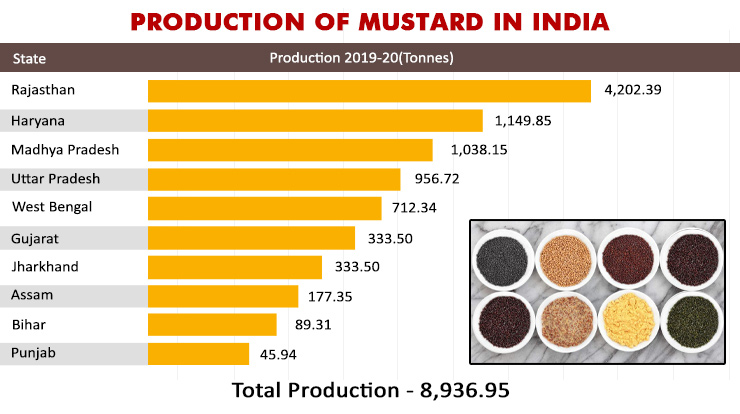

Mustard
Types of Mustard:
Black Mustard (Brassica nigra):
Also Known As: Brassica nigra.
Description: Black mustard seeds are small, black or dark brown, and have a
strong flavor.
Uses: Used as a spice in cooking, for pickling, and in mustard condiments.
The leaves can also be consumed as greens.
Growth Conditions: Prefers cool temperatures and well-drained soils. It can
grow in various climates but is typically found in temperate regions.
Varieties: Includes various regional cultivars that may differ slightly in
seed size and flavor.
Brown Mustard (Brassica juncea):
Also Known As: Indian mustard or Chinese mustard.
Description: Brown mustard seeds are slightly larger than black mustard
seeds and have a pungent flavor.
Uses: Widely used in Asian cuisines, especially in Indian and Chinese
cooking. The seeds, leaves, and stems are all edible.
Growth Conditions: Thrives in well-drained, fertile soils with full sun
exposure. It can tolerate a variety of climates but prefers cooler growing seasons.
Characteristics: Known for its adaptability to different soil types and
environmental conditions.
White Mustard (Sinapis alba):
Also Known As: Yellow mustard.
Description: White mustard seeds are larger and milder compared to black
and brown mustard seeds. They are often light yellow in color.
Uses: Used to make the common yellow mustard condiment, in pickling, and as
a spice in various dishes. The young leaves are also consumed as greens.
Growth Conditions: Prefers cool climates and can be grown in a variety of
soil types, but well-drained, fertile soils yield the best results.
Nutritional Value: Rich in dietary fiber, essential oils, and various
vitamins and minerals.
Oriental Mustard (Brassica juncea var. integrifolia):
Also Known As: Leaf mustard or mustard greens.
Description: This variety is primarily grown for its leaves, which are used
as greens in salads and cooking.
Uses: The leaves are used in salads, stir-fries, and as a cooked green. The
seeds can also be used to produce mustard oil.
Growth Conditions: Grows best in well-drained, fertile soils with full sun
exposure. It is tolerant to different growing conditions but prefers cooler temperatures.
Nutritional Value: High in vitamins A, C, and K, and rich in antioxidants.
Growing Conditions
Climate:
Temperature:
Germination Stage: Mustard seeds require a soil temperature of around 10°C
to 15°C for optimal germination. Low soil temperatures below 5°C can delay or prevent
germination, while temperatures above 30°C can adversely affect it.
Vegetative Growth Stage: During the vegetative phase, mustard prefers cool
temperatures between 10°C and 24°C. This range supports optimal leaf development and stem
growth.
Reproductive Stage: As mustard transitions from vegetative growth to
reproductive stages (flowering and pod formation), slightly warmer temperatures (18°C to
24°C) are favorable. However, excessive heat, particularly temperatures above 30°C during
flowering, can lead to reduced pollination and pod formation.
Harvest Stage: Warm and dry conditions are ideal during harvest, as they
help to ensure the mustard pods are mature and reduce the moisture content. This prevents
fungal diseases and spoilage during storage.
Rainfall and Moisture:
Moderate Rainfall: Mustard requires moderate rainfall, generally between
300mm to 500mm per growing season. Rainfall distribution should be well-timed to ensure
sufficient moisture during key growth stages, such as germination and early vegetative
growth.
Irrigation: In regions where rainfall is insufficient or irregular,
irrigation is crucial. It helps maintain adequate soil moisture, especially during critical
periods like flowering and pod filling. Over-irrigation, however, should be avoided to
prevent waterlogging and root diseases.
Drought Resistance: Some mustard varieties are bred for drought resistance
and can tolerate dry conditions better. These varieties are particularly important in arid
and semi-arid regions.
Sunlight:
Mustard requires full sunlight for at least 6 to 8 hours a day. Adequate sunlight is
essential for photosynthesis, which drives plant growth and development.
Cloudy and
overcast conditions, especially during critical growth phases, can reduce photosynthetic
activity and, consequently, pod yield.
Humidity:
Mustard prefers low to moderate humidity levels. High humidity can create favorable
conditions for fungal diseases such as white rust and powdery mildew, which can
significantly impact yield and quality.
Proper field management practices, like
maintaining adequate spacing between plants and timely application of fungicides, can help
manage disease pressure in high-humidity conditions.
Wind:
Mild winds can aid in pollination by helping to distribute pollen. However, strong winds can
cause lodging, where the mustard plants fall over, making harvesting difficult and reducing
yield.
Windbreaks or shelterbelts can be used to protect mustard fields from strong
winds, helping to maintain plant stability and health.
Soil:
Soil Type:
Loamy Soil: Mustard thrives best in loamy soils, which are a balanced
mixture of sand, silt, and clay. These soils provide good drainage while retaining
enough moisture for optimal growth.
Clayey Soil: Clayey soils can also be suitable for mustard, provided
they are well-drained to prevent waterlogging. These soils have good nutrient retention
but may require proper management to ensure good aeration.
Sandy Loam: Sandy loam soils, which are a mix of sand and loam, are
also favorable for mustard cultivation. They offer good drainage and ease of root
penetration but may require additional organic matter to improve nutrient content.

Soil Structure:
Well-Drained: Mustard requires well-drained soil to prevent
waterlogging, which can lead to root rot and other diseases. Soil with good drainage
ensures that excess water is efficiently removed.
Good Aeration: Proper soil aeration is essential for root respiration
and overall plant health. Well-aerated soils support vigorous root growth and nutrient
uptake.
Soil Fertility:
Nutrient-Rich: Mustard grows best in fertile soils with adequate levels
of essential nutrients such as nitrogen (N), phosphorus (P), potassium (K), and
micronutrients (e.g., zinc, iron, copper).
Organic Matter: The presence of organic matter in the soil, such as
decomposed plant material or compost, enhances soil fertility by providing nutrients and
improving soil structure. Organic matter also supports beneficial soil microorganisms.

Soil pH:
Optimal pH Range: Mustard prefers a slightly acidic to neutral soil pH,
typically between 6.0 and 7.5. Soils outside this pH range may require amendments to
adjust the pH to an optimal level.
pH Management: Lime (calcium carbonate) can be added to acidic soils to
raise the pH, while sulfur or organic matter can be used to lower the pH of alkaline
soils.
Soil Preparation:
Plowing and Tilling: Proper soil preparation involves plowing and
tilling to create a fine seedbed. This helps to improve soil structure, eliminate weeds,
and incorporate organic matter or fertilizers.
Leveling: Leveling the field ensures uniform irrigation and prevents
waterlogging in low-lying areas. It also facilitates efficient planting and crop
management.
Soil Conservation:
Erosion Control: Practices such as contour plowing, terracing, and
maintaining ground cover help prevent soil erosion, which can deplete soil fertility and
structure.
Crop Rotation: Rotating mustard with other crops, such as legumes, can
improve soil health by reducing the buildup of pests and diseases and enhancing soil
nutrient levels through nitrogen fixation.
Water Requirements:
General Water Needs:
Mustard requires approximately 300-500 millimeters (mm) of water throughout its growing season, depending on the variety, climate, and soil conditions.
Critical Growth Stages:
Germination: Adequate soil moisture is necessary for seed germination and seedling establishment.
Vegetative Stage: Water is crucial during the vegetative stage to promote leaf and stem development.
Flowering: Adequate moisture at the flowering stage ensures proper flower and pod development.
Pod Filling: Irrigation during the pod filling stage is vital for achieving good seed size and weight.
Late Season: Reducing irrigation towards the end of the growing season allows the soil to dry, facilitating harvesting and preventing lodging.
Drought and Stress Management:
Drought-Resistant Varieties: Plant drought-resistant mustard varieties in regions prone to water scarcity. These varieties are bred to withstand periods of water stress.
Deficit Irrigation: Implement strategies where water is applied during the most critical growth stages to manage water resources during drought conditions.
Planting and Seeding:
Planting:
Mustard can be sown either by broadcasting seeds or by using seed drills for more uniform planting. It is typically sown in the fall or early spring, depending on the climate.
Seeding Rates:
The seeding rate varies but generally ranges from 4 to 6 kg per hectare, depending on the variety and planting method.
Nutritional Value:
Carbohydrates:
Mustard seeds are a rich source of carbohydrates, providing energy.
Fiber:
Mustard seeds are high in dietary fiber, promoting digestive health.
Vitamins and Minerals:
Mustard seeds contain essential nutrients, including B vitamins, calcium, magnesium, and iron.
Uses:
Food:
Mustard seeds are used in cooking as a spice, in pickling, and to make mustard condiments. The leaves can also be eaten as greens, and mustard oil is extracted from the seeds.
By-Products:
Mustard cake, a by-product of mustard oil extraction, is used as animal feed and fertilizer.
Environmental Impact and Sustainability:
Mustard is a relatively sustainable crop, requiring less water compared to other crops. Mustard farming contributes to soil health through the use of crop rotation and green manure. Adopting sustainable practices such as organic farming and integrated pest management can further reduce environmental impact.